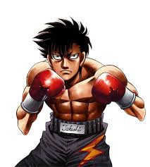

Aqui podras ver un poco de informacion de este anime sobre boxeo.
¿DE QUE TRATA?
Hajime no ippo es un manga y anime, creado por George Morikawa. La comienza presentandonos al protagonista "Ippo Makunauchi" un joven
timido y reservado el cual trabaja alquilando botes de pesca, un negocio familiar con su madre, Ippo es acosado frecuentemente por sus
compañeros de clase, algo que ya se ah vuelto rutina para el. Hasta que un dia, cuando los estaban acosando debajo de un puente,
un hombre que corria por la zona baja a ayudarlo,asi salvandolo de una golpiza, el hombre que salvo es Mamoru Takamura, el cual lo lleva
a su gimnasio de boxeo para curar sus heridas allí. En el gimnasio Takamura, la ver lo decaido que estaba Ippo lo intenta animar haciendo
que golpeé un saco de arena imaginando que son sus acosadores, despues de unas instrucciones de Takamura Ippo golpea el costal como un
profesional. Y asi inspirado por Takamura deicde entranar para ser un boxeador, y dar a la repuesta a la pregunta "¿Que significa ser fuerte"
PERSONAJES

Takeshi Sendo
Takeshi Sendo, tambien conocido como "El tigre de Naniwa" gracias a su estilo de boxeo.
Sendo es originario de la region de Osaka, el cula mantiene una relacion de amistad con Ippo,
tambien siendo un gran rival para el